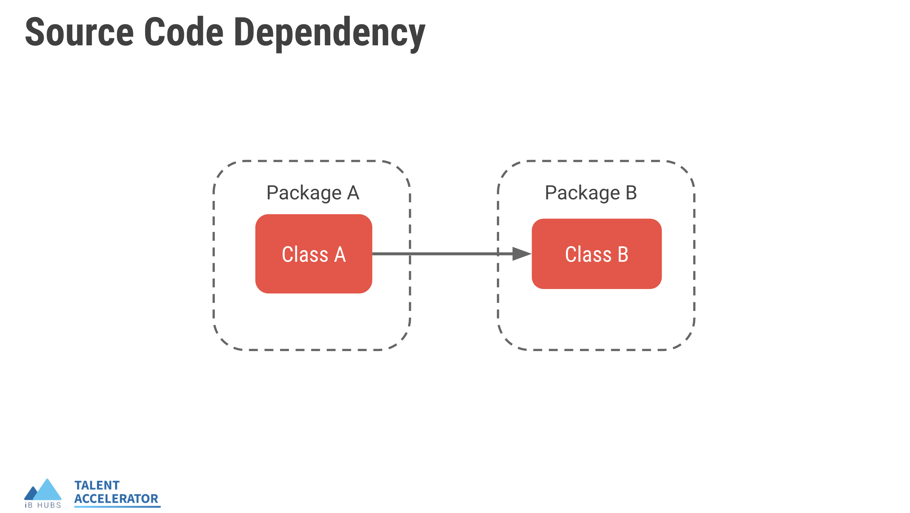
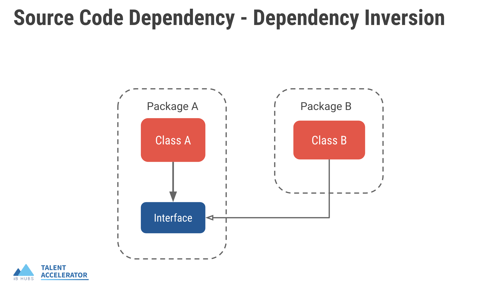
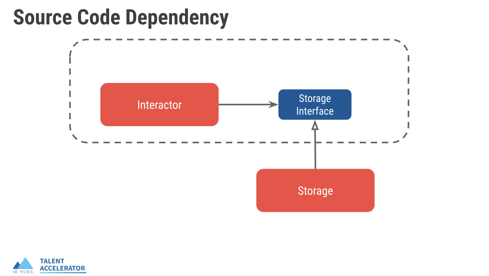

# The Clean Architecture

The software is expected to be soft enough(easy to change) to meet the customers' changing requirements.
Its developer's responsibility to maintain the softness property of the software.
If not managed properly, the software could become a massive liability to the organization, consuming human resources, time, money, etc. resources.
A software has two different values - behavior and structure.
Structure of the software is responsible for ease of change. is supposed to implement this interface by doing this
Structure of software is about how we organize the code (software elements).
# Software Elements
# Business Logic
Code which implements the core business logic.
Example: Calculating user score in an exam based software
This element of the software, depends only on the business requirements and is independent of the GUI, Framework and Database.
# Data Access / ORM queries
Code which handles the storage, retrieval, updation, etc. of the data
This element of the software, depends on the underlying database specifics and is independent of the Business Logic, GUI.
# Preparing Responses for Client
Code which handles the preparation of data (typically json/html) required for the client.
Example:
- Preparing HTML page for the user
- Preparing JSON response required for a frontend application
This element of the software, depends only on the GUI and is independent of the Business Logic, Database.
# Handling API requests (URLs, Serialization)
Code which handles client requests and integrates all the above elements in the software to generate expected response for the client
# Well structure software
There should be a clear separation between each of the software elements discussed as they change due to a different reason (concern)
Example: Writing business logic in a separate module instead of coupling it with other software elements like database logic etc.
This separation is achieved by splitting the software into different modules.
# Clean Architecture
In Clean Architecture we organize our application into the below four modules
- Interactor: Code to implement all the business rules of a software.
- Storage: Code to handle the storage, retrieval, updation etc. of the data.
- Presenter: Code to prepare response data for clients.
- Controller: Code to handle client requests and integrate the above 3 modules.
# Advantages of Clean Architecture
# Develop Independently
You can develop each module independently. You need not think about how to write database queries or preparing json responses when implementing a business logic.
# Testable Code
As the code is now organized into multiple modules, Tests can be written in a relatively narrow scope. This drives you to write more & more tests.
# Independent of the database
You can swap out Oracle or SQL Server for Mongo, BigTable, CouchDB, or something else. Your business rules are not bound to the database
# Loosely Coupled with UI
Changes in frontend doesn’t affect any module other than Presenter
# Easily Understandable
Any new developer can easily understand the code and make necessary changes quickly.
# Flow of Control

# Source Code Dependency

Package A is said to be depending on Package B as Class A of Package A is depending on the implementation of Class B of Package B. The dependency could be as simple as importing Class B and invoking a method of Class B. # Volatile Component
Components(modules) of code which are more likely prone to change
Example: Presenter, Storage
# Non-Volatile Component
Components(modules) of code which are less likely prone to change
Example: Interactor
# Dependency Inversion

- If a Non-Volatile component depends on a Volatile component, then the Non-Volatile component also becomes Volatile.
- Volatile components should depend on Non-Volatile components
To fix this we use a famous technique called Dependency Inversion.

We write an interface in Package A containing all the functions required by the Class A. Now Class B is supposed to implement this interface by doing this, Class A no longer depends on Class B instead Class B depends on the interface.
# Interface
An interface is an abstract type that is used to specify a behavior that classes must implement.
Similarly in Clean Architecture

# Abstract Class
We use an abstract class to implement interfaces in python. An abstract class is a class that cannot be instantiated directly and may include abstract methods which are implemented by the child classes.
# App Structure
fb_post_clean_architecture
├── __init__.py
├── app.py
├── conf
│ ├── __init__.py
│ └── settings.py
├── constants
│ └── __init__.py
├── interactors
│ ├── __init__.py
│ ├── presenters
│ │ └── __init__.py
│ └── storages
│ └── __init__.py
├── models
│ └── __init__.py
├── presenters
│ └── __init__.py
├── storages
│ └── __init__.py
├── tests
│ ├── __init__.py
│ ├── interactors
│ │ └── __init__.py
│ ├── presenters
│ │ └── __init__.py
│ ├── storages
│ │ └── __init__.py
│ └── views
│ └── __init__.py
# New packages Added
- interactors:
- Write all the business logic as interactor classes in this package..
- Write your presenter interfaces in
presenterspackage inside theinteractorspackage. - Write your storage interfaces in
storagespackage inside theinteractorspackage.
- presenters:
- Write all your presenter implementation logic in this package.
- storages:
- Write all your presenter implementation logic in this package.